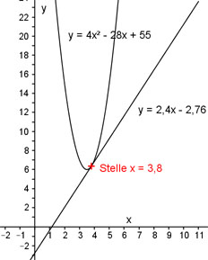

Aufgabe 83 An welchen Stellen x schneiden sich die Parabel y = 4x2 - 28x + 55 und die Gerade y = 2,4x - 2,76? 4x2 - 28x + 55 = 2,4x – 2,76 |-2,4x 4x2 - 30,4x + 55 = -2,76 |+2,76 4x2 - 30,4x + 57,76 = 0 |:4 x2 - 7,6x + 14,44 = 0 p, q – Formel: p = -7,6 ; q = 14,44 x1,2 = 3,8 Die identischen Lösungen der Gleichung haben die Bedeutung, dass ein Berührpunkt an der Stelle x = 3,8 vorliegt. 